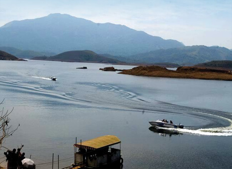
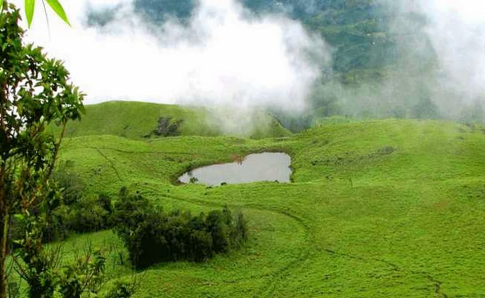

BANASURA DAM
Banasura Sagar Dam, which impounds the Karamanathodu tributary of the Kabini River, is part of the Indian Banasurasagar Project consisting of a dam and a canal project started in 1979.

CHEMBRA PEAK
The peak is visible from almost all parts of Wayanad. This place is an ideal destination for trekking activities. You have to take prior permission from the Meppady forest office before going for a trek at Chembra Peak.

EDAKKAL CAVES
Edakkal Caves also Edakal, are two natural caves at Edakkal, in Wayanad district of Kerala. The caves are situated 1,200 m above sea level on Ambukutty Mala, on the Mysore Plateau, in the Western Ghats